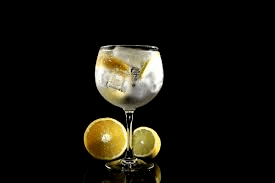
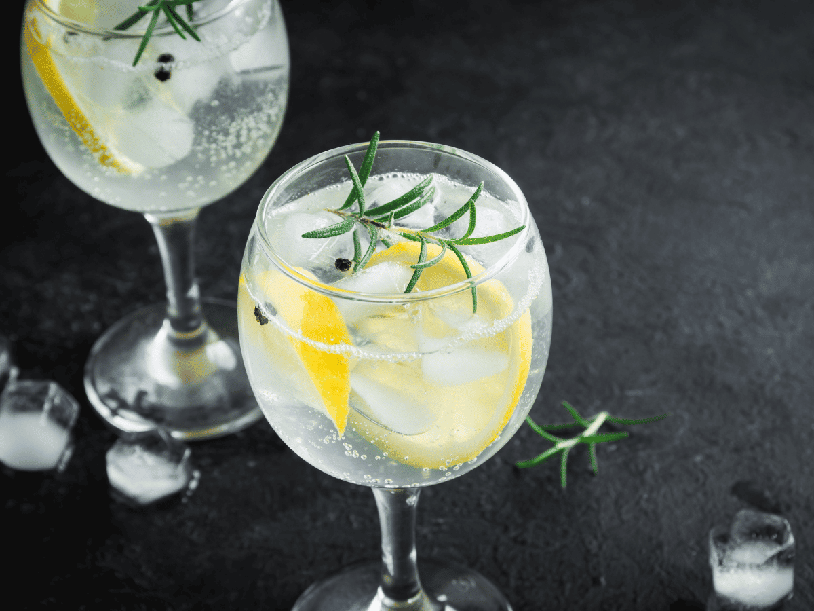
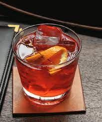
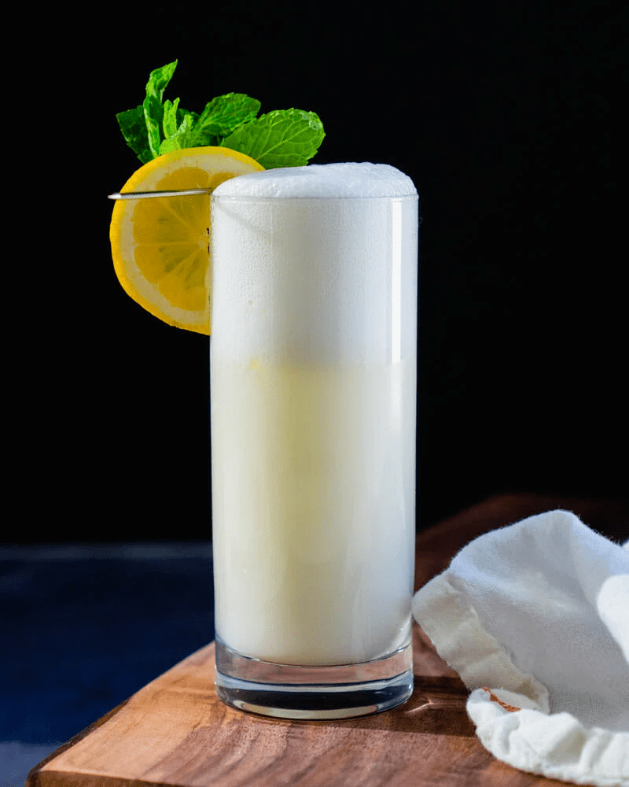

¿Qué es el Gin?
El gin es un licor destilado a partir de un grano y agua que se aromatiza con bayas de enebro y otros productos botánicos. Se cree que el gin nació en la ciudad holandesa de Leiden en 1650. El primer registro escrito del gin se encuentra en un cuaderno de bitácora de la Marina Real de 1748, en el que se detallan las raciones diarias de ron y gin. El gin fue popularizado en Inglaterra por el médico holandés Franciscus de la Boe (Francis de le Boë), que emigró a Londres y abrió allí una consulta médica a finales del siglo XVII. De le Boë se hizo famoso por su brebaje medicinal, el elixir de De le Boe, que según él tenía propiedades medicinales y podía curar desde el dolor de cabeza hasta la gota. Hay muchos estilos diferentes de gin, como el London dry gin, el Old Tom Gin, el Genever Gin y el New Western Gin.
El gin no es una bebida espirituosa como el vodka, el whisky o el tequila. El gin es una bebida alcohólica elaborada con alcohol destilado mezclado con bayas de enebro y otros productos botánicos. El gin puede mezclarse con diferentes ingredientes para crear cócteles o beberse solo.
Si alguna vez has bebido un martini, un Manhattan o un Gin & Tonic, entonces has probado el gin. Puedes beberlo con hielo o hacer un cóctel diferente añadiendo jugo de cítricos y azúcar, por ejemplo.
El sabor del gin puede ser un poco más complejo que el de otras bebidas espirituosas debido a su mezcla de ingredientes botánicos. Mucha gente disfruta bebiendo gin porque dicen que es refrescante y menos áspero que otras bebidas. Algunos creen que el gin sabe a agujas de pino, pero otros dicen que les recuerda al botiquín de sus abuelos.
Diferencia con la ginebra
La ginebra es un invento holandés de mediados del siglo XVI, mientras que el gin es la versión inglesa de esta bebida. Y la palabra “gin” no es otra cosa que la contracción sintáctica de “ginebra”.
Según se sabe, el nacimiento de la ginebra se dio cuando un profesor de medicina holandés, de apellido Sylvius, maceró bayas de enebro en alcohol con fines diuréticos, a mediados del siglo XVI. Se utilizó con esos fines hasta que un tal Lucas Bols (oh!) tuvo la genial idea de destilar esos macerados y embotellar el producto bajo el nombre de ginebra. Este suceso ocurrió en 1575, siendo que la ginebra como bebida y Bols como marca, ¡aparecieron juntas y hace tanto tiempo!
Pero resulta que este delicioso brebaje muchos años después tuvo su mayor éxito en Gran Bretaña, con lo cual el gobierno aprovechó para gravar la importación de ginebra con impuestos más duros y a los ingleses no les quedó otra que destilarla por sus propios medios, aunque fue recién en 1895 cuando un tal James Burrough, farmacéutico, desarrolló una fórmula magistral, logrando un estilo más seco y con un alcohol más refinado, que se denominó formalmente London Dry Gin, estilo que hoy continúa siendo predominante en todo el mundo. El Dr. Burrough fue el fundador de la emblemática marca Beefeater.
Pero si intentamos diferenciar claramente entre gin y ginebra, realmente es difícil hacer una distinción entre una bebida y la otra ya que comparten algo muy importante, y es que ambas tienen que tener enebro en su composición aromática. Cuando hablamos de enebro nos referimos a las bayas de enebro, el fruto de una especie en particular llamada Juniperus communis. Es decir, no sólo tienen que tener enebro en su formulación, sino que el aroma y sabor del enebro tienen que estar presentes, tanto en una bebida como en la otra.
Por eso creemos que los españoles hacen bien en llamar “ginebra” tanto a las ginebras de tipo holandesas como a los gins de tipo inglés, y todas sus variantes modernas. Y es porque la ginebra y el gin tienen más cosas en común que diferencias sustanciales. Y la primera diferencia que podemos observar -y creo que la única de relevancia- es el origen alcohólico. Y así también lo determina el Código Alimentario Argentino al referirse a una y a otra. La ginebra tiene como origen alcohólico un destilado simple de cereales (que bien podría ser cebada malteada, pero no se aclara de qué cereal), mientras que el gin tiene como origen alcohólico un alcohol rectificado de alta graduación. La implicancia aromática que debería subrayarse es que en el caso de la ginebra hay presencia (aunque podría estar atenuada) de congéneres alusivos al alcohol que le da origen, mientras que en el gin -por tratarse del uso de alcohol neutro rectificado- no debería ser posible reconocer el origen alcohólico.
Por otro lado, comparten el uso de las bayas de enebro, que en el caso de la ginebra se especifica que “deben ser perceptibles, aunque pudieran estar atenuadas”, mientras que en el gin se especifica que “el sabor a enebro deberá ser preponderante”. Esto no es más que una transcripción del Código Alimentario Argentino, pero resulta coherente con lo que esperamos de ambos productos.
Por consiguiente, tanto el gin como la ginebra pueden ser obtenidos a través de las mismas técnicas de destilación, teniendo en cuenta para diferenciarlos, solamente el origen alcohólico.
Tipos de gin
-
Gin
Este tipo de ginebra es el más clásico y el que requiere menos ingredientes para prepararse. Se trata de una variedad que se puede destilar sólo a base de alcohol de origen agrícola, sumando algún aroma en particular al enebro, o incluso sólo con enebro. No es necesario realizar un proceso de redestilación para este tipo de gin. La graduación alcohólica mínima que tiene que alcanzar es de un 37,5%.
-
Gin destilado
La ginebra destilada se caracteriza por contener sabores extra, además del característico que aporta el enebro. Para su elaboración se utiliza un alcohol de alta calidad y el proceso de destilación se realiza más de una vez, de allí su nombre. A medida que se destila, se le pueden agregar sabores extra, recurriendo a otros granos y semillas, o incluso añadiendo frutas, lo que puede darle también otro color a la bebida final. Hay quienes también recurren a saborizantes artificiales para ampliar aún más las variedades de ginebra destilada.
Este Distilled Gin alcanza una graduación mínima de alcohol del 96%, y como veremos a continuación, es muy similar a la London Gin. Y si bien requiere de tiempo y dedicación en su preparación, es una variedad de ginebra que vale la pena probar
-
London Gin
La tercera variedad de ginebra es la London Gin. A diferencia de la Distilled Gin, la London se prepara a partir de un proceso de destilación que se realiza una vez con un alcohol muy puro, con variedad de aromas pero que no admite colorantes ni edulcorantes artificiales.
La graduación alcohólica que alcanza esta variedad es de un mínimo de 70 grados, y se caracteriza por un sabor más seco que el resto de las variantes. Aún así, dentro de la London Gin también se pueden subclasificar otros tipos de ginebra, siendo la Plymouth la menos seca de todas. Ésta se produce en la localidad homónima de Londres , y la marca que la comercializa lleva también el mismo nombre.
Si bien la London Gin es una de las más famosas del mundo no se trata de una denominación de origen sino más bien que se caracteriza por su modo de elaboración
-
Jenever o Genever
La variedad Genever es una ginebra holandesa, que se diferencia del resto principalmente por el color y el sabor, ya que se elabora en base a granos de malta. Esto le otorga una apariencia más oscura y un gusto mucho más intenso, que se parece bastante al del whisky. Es por ello que esta variedad no pretende ser neutra en su sabor como las anteriormente mencionadas, sino más bien lo contrario, su intensidad es lo que la caracteriza.
La variedad Genever se subdivide a su vez en jóven, si no ha añejado en barrica, vieja, si lleva tiempo siendo añejada, o frutal, si ha sido aromatizada con limón u otra fruta.
La marca más conocida que elabora esta variedad es Bols Genever, que si bien se utiliza para preparar cócteles, no es muy común recurrir a ella para hacer un gin tonic, por ejemplo.
-
Gin envejecido
En general, la ginebra no es una bebida que implique un proceso de añejamiento en su elaboración. Pero en el último tiempo se ha incursionado en esta práctica, adoptando el modo en que se prepara el tequila, por ejemplo, utilizando barricas para dejar reposar allí la bebida, con el fin de desarrollar otras variedades de sabor. Este tipo de gin es consumido solo, no es utilizado para la preparacion de cócteles
-
Old Tom Gin
Esta famosa variedad de ginebra es en realidad un subtipo de la London Gin, y es muy difícil de encontrar en el mercado. Su sabor parece ser una mezcla entre la Genever y la London, y se caracteriza por su modo de elaboración, que replica el método que antiguamente se utilizaba para conseguir ginebra, endulzando el alcohol durante el proceso de destilación hasta encontrar la nota de sabor deseada.
-
Sloe Gin
La variedad de gin Sloe, también de origen inglés, se diferencia de otras ya que además del proceso de destilación es sometida también a la maceración. Además se utiliza un fruto denominado endrina, que en inglés es es conocido como Sloe, y de allí su nombre, cuyo sabor es ligeramente ácido y amargo a la vez. La graduación alcohólica de este tipo de ginebra es un poco menor, alcanzando los 25 ó 30 grados.
Tragos
-
Gin Tonic
Las proporciones correctas para elaborar un buen gin, aunque para gustos colores, son de 50 mililitros de ginebra (entre 50 y 60 sería lo adecuado) y 200 mililitros de tónica. Con esas proporciones, el drink que vas a prepararte tendrá unos 8 grados aproximadamente.
Ingredientes
- Gin
- Hielo
- Tónica
- Citricos: rodaja de limon/lima/naranja/pomelo...
- Vaso adecuado
-
Negroni
El Negroni posee una mezcla de 3 alcoholes: gin, Campari y Vermouth rosso y se toma en un vaso corto.
Ingredientes
- 1 oz (30ml) Gin
- 1 oz (30ml) Campari
- 1 oz (30ml) Vermouth Rosso
- 3 cubos de hielo
-
Pomelo Sour
A este cítrico combinado de la familia “sour” se le agrega una clara de huevo para obtener una apetitosa espuma en su superficie. Aunque también puedes sustituirla por albúmina, como lo hacemos nosotros en nuestras recetas de Sour Love o Pisco Sour. El Pomelo Sour destaca también por un gusto dulce y a la vez amargo, lo que hace que este brebaje posea un sabor realmente inolvidable, y por lo tanto, diferente de lo que estamos acostumbrados.
Ingredientes
- 1,5 oz (45 ml) Gin
- 2,5 oz (75 ml) jugo de pomelo
- 0,5 oz (15 ml) triple sec
- 0,5 oz (15 ml) jugo de limón
- 0,3 oz (10 ml) jarabe simple
- 1 clara de huevo
- Hielo
-
Gin Fizz
Esta clásica bebida refrescante y gaseosa destaca por su gusto cítrico con un toque de gin. Se prepara de una manera parecida al Mojito o Caipiriña, agregándole jugo de limón, almíbar y rellenando con un chorro de agua con gas o ginger ale. Anímate a preparar este cóctel con un buen gin y verás lo rico que queda se destaca por su sabor característico dulce y amargo.
Ingredientes
- 2 oz (60 ml) Gin
- 1 oz (30 ml) jugo de limón
- 0,75 oz (20 ml) jarabe simple
- Soda para rellenar
- 4 cubitos de hielo
- Cascara de limon o guinda para decoración
- Clara de huevo (Opcional)